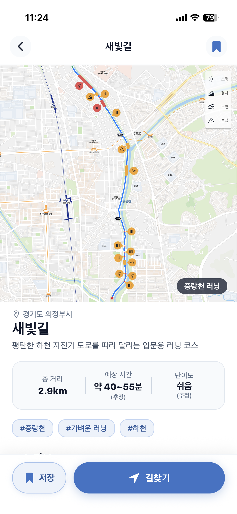

러너를 위한 코스 추천 서비스
추천을 넘어서
선택할 확신을
드립니다
내 주변의 새로운 러닝 코스를 발견하고
지도 위 정보를 확인한 뒤
안심하고 오늘의 코스를 선택하세요.

새로운 러닝 코스를 찾을 때
이런 고민이 있으셨나요?

정보가 흩어져 있어요
지도, 블로그, SNS를 각각 확인해야
코스 정보를 모을 수 있어요.

달리기 전 판단이 어려워요
조명, 노면, 경사, 화장실 같은 중요 정보를 알기 힘들어요.

낯선 코스는 불안해요
한 번도 가보지 않은 길이라 선택하기
망설여져요.
RunRoute 사용 방법
발견부터 저장까지 3단계로 간단해요.
1
발견
내 주변 추천 코스와 새로운
러닝 코스를 빠르게 찾아요.
2
판단
지도 위 경로와 안전·노면·편의시설 정보를 확인하고 달릴지 결정해요.
3
저장
마음에 든 코스를 저장하면 다음
러닝 시 다시 확인할 수 있어요.